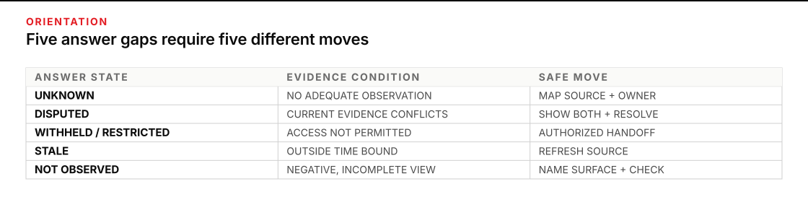
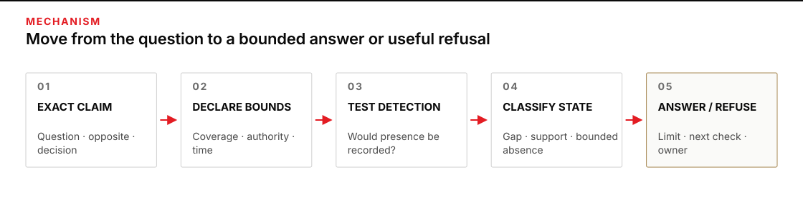
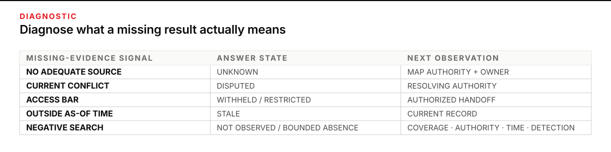

When the system is expected to answer past its evidence
A question arrives in yes-or-no form: “Did anything fail?”, “Is the supplier current?”, or “Has the change been approved?” Your knowledge system finds no matching record. The empty result creates pressure to answer no, even though the record may be incomplete, stale, disputed, or outside your authority.
Give this work 45–60 minutes. You will leave with a negative-knowledge and refusal record: the exact claim sought, the search and coverage boundary, source authority, time boundary, answer state, supporting and contrary evidence, a decision-safe refusal, the next discriminating observation, and a named owner.
First build a navigable vault and learn to walk its citations in P4 · Going deeper. Continue when a walked trail ends without an answer. The goal is not to make every note carry a new status system. It is to represent what one bounded question does—and does not—permit you to say.

Figure transcript
UNKNOWN means no adequate relevant observation or authoritative source has been found; safely say that neither the claim nor its opposite is supported. DISPUTED means current relevant evidence supports incompatible answers; show the conflict and return to the resolving authority. WITHHELD or RESTRICTED means relevant evidence is outside permitted access; access status says nothing about truth, so use an authorized handoff. STALE means a once-relevant source lies outside the required time boundary; it may support a past claim but not current state. NOT OBSERVED means a defined search found no target but coverage or detection was incomplete; report the exact surface and window without claiming absence. Bounded absence is not another gap state; it is earned only after query-specific coverage, authority, time, and detection are established.
Treat silence as a state to diagnose
A linked vault is normally an incomplete view of the world. The open-world assumption captures that fact: a statement missing from the record may still be true. The W3C OWL 2 Primer contrasts this with a closed-world assumption, under which a missing fact is treated as false because the record is assumed complete for the question.
Neither assumption is a personality setting. It is a claim about coverage. An employee directory may be closed enough for “Which active employees have no assigned manager at 17:00?” if every active employee and assignment is required to be present in the reconciled snapshot. The same directory remains open for “Who informally advises this team?” Never call the whole vault complete. Close only a named slice for a named query, under named conditions.
Ask what survives every plausible completion
Research on incomplete databases describes an incomplete record as representing several possible complete records. A certain answer is, roughly, one that does not change across those plausible completions. Libkin’s work on certain answers and incomplete information develops the formal versions of that idea and warns that one definition does not fit every data model. You do not need to compute possible worlds at your desk. Use the discipline behind them:
If one completion consistent with the evidence contains an approval and another contains no approval, neither “approved” nor “not approved” is yet a safe answer.
The refusal is not empty. It records why both possibilities remain open and what evidence would separate them.
Classify the answer gap, not the whole note
Use one of these states for the bounded question. These are query outcomes, not tags or frontmatter for an entire source note:
| State | What the evidence says | What you may safely say |
|---|---|---|
| UNKNOWN | No adequate relevant observation or authoritative source has been found within the search boundary. | Neither the claim nor its opposite is supported. |
| DISPUTED | Relevant current evidence supports incompatible answers, and the conflict is not resolved by authority or method. | Name the disagreement and its decision effect; do not silently choose a side. |
| WITHHELD / RESTRICTED | Relevant evidence is known to be inaccessible or not permitted for this operator or use. | Access state says nothing about truth. Return to an authorized owner. Do not reveal even the restriction if that fact is sensitive. |
| STALE | A once-relevant source falls outside the decision’s required time boundary, or its currency cannot be established. | It may support a past-tense claim. It cannot establish current state. |
| NOT OBSERVED | A defined search or observation did not find the target, but coverage or detection was incomplete. | Report where and when it was not observed. Do not promote that result to absence. |
These labels explain the evidence condition; they are not five mutually exclusive truth values. A real query can be both stale and restricted, or disputed with one stale source. Record every specific condition that changes the next move and name the controlling one. Use UNKNOWN when no more specific mechanism explains the gap. In every case, keep the claim itself unresolved until an observation supports or contradicts it.
Bounded absence sits outside those five gap states. It is an earned negative answer: the target was not found in a current, authoritative, query-complete surface that would record it if present. The word bounded matters. “No open requests were present in the reconciled official queue at 17:00” can be supported without claiming that no request exists anywhere or will arrive later.
Build an absence warrant before saying “none”
Altman and Bland’s short statistical note, “Absence of evidence is not evidence of absence,” addresses a specific misuse of non-significant study results. The broader operator lesson needs one qualification: a negative observation can support absence when the observation was capable of detecting the thing and the searched surface was complete for the question. Before accepting a negative claim, write five bounds:
- Question: the exact proposition, population, threshold, and decision it would change.
- Coverage: every source, entity, location, and exclusion searched; include missing intervals and failed ingestion.
- Authority: which source is entitled to establish the fact—not merely repeat it.
- Time: the event window and the “as of” time at which the answer is valid.
- Detection: why the source or observation would record the target if it were present. Mandatory capture plus a reconciled count is stronger than “someone probably would have filed a ticket.”
Completeness is query-specific. Darari and colleagues show how completeness statements can declare which part of a source supports complete query answers. The UK Government’s Data Quality Framework guidance adds the operational pieces: tell users which expected records are missing, the period the data covers, update frequency, access restrictions, and known quality limits. If any bound fails, use the matching gap state rather than “none.”
Turn an empty result into a next-evidence path
An empty result has provenance too. Chapman and Jagadish’s why-not provenance asks why an expected item is missing from a query result: was it absent from the input, discarded by a transformation, hidden behind an interface, or filtered by the query? Carry that habit into the vault. Record why the answer is missing, not only that it is missing.
A decision-safe refusal has four parts:
I cannot support [claim] for [scope] as of [time]. I checked [coverage]; the state is [UNKNOWN / DISPUTED / RESTRICTED / STALE / NOT OBSERVED] because [specific gap]. This does not establish [opposite claim]. The smallest next observation is [check], owned by [person or role]; until then, [hold, defer, or bounded action].
Refusal is an answer action, not a blank screen. Research on classification with a reject option formalizes abstention as an explicit choice with a tradeoff between coverage and error. The analogy is limited—you are not calculating a calibrated rejection threshold here—but it supplies the right posture: decide when to answer, and make the refusal useful.
Do not use refusal to avoid hard work. State every supported partial fact, then refuse only the unsupported leap. ODNI analytic standards pair those duties: identify information gaps, source currency, contrary information, and indicators that would change uncertainty, while not avoiding difficult judgments merely to reduce the risk of being wrong.

Figure transcript
Stage one writes the exact claim, its opposite, and the decision it could change. Stage two declares the search coverage, source authority, event window, and answer-as-of time. Stage three tests detection: if the target were present, would this current, reconciled source be required and able to record it? Stage four classifies the result as UNKNOWN, DISPUTED, WITHHELD or RESTRICTED, STALE, NOT OBSERVED, supported positive, or BOUNDED ABSENCE. Stage five returns every supported partial fact, then either a bounded answer or a refusal that states the gap, what it does not establish, the next discriminating observation, and the owner.
Worked case: no ticket becomes a false all-clear
A production team receives two pallets of temperature-sensitive resin. Its synthetic quality rule requires every pallet to remain at or below 8°C; an excursion longer than 10 minutes blocks release pending quality review. At 06:20, the shift lead asks:
Did either pallet exceed 8°C for more than 10 minutes between 00:00 and 06:00?
The knowledge system searches the incident register. It finds no temperature-excursion ticket and produces:
No excursion occurred. The incident register contains no temperature alert for either pallet, so both pallets are clear for release.
Inject the failure: treat the ticket register as the world
The sentence contains a false negative. It silently assumes that every excursion would produce a ticket and that every relevant sensor reached the ticketing service. Neither assumption appears in the answer. The observable symptoms are a universal “no,” no event window attached to the cited register, no coverage check, and a release action resting on a derivative reporting channel.
The operator reopens the query and records what exists:
| Evidence item | What it establishes | Limit |
|---|---|---|
| Incident register | No ticket was recorded for the two pallets by 06:20. | A ticket is created only from an alert received by the central gateway. |
| Gateway coverage log | Gateway G2 stopped ingesting from 01:20 to 03:10. | Both pallet loggers used G2 during that interval. |
| Quality procedure | Continuous temperature evidence is required for release. | When central telemetry has a gap, the device-side buffer must be retrieved. |
| Device buffers | Each logger keeps local readings during a gateway outage. | Not yet retrieved when the first answer was written. |
The exact negative claim is not supported. The correct answer state is NOT OBSERVED: no excursion was observed in the incident register, but the observation surface could not detect alerts during a known gap. It is not UNKNOWN because a targeted search did occur. It is not bounded absence because coverage and detection both failed.
Write predictions before the next observation
The smallest discriminating observation is the two device-side buffers, owned by the quality technician.
- If no qualifying excursion occurred: both buffers should show continuous readings at or below 8°C throughout 00:00–06:00.
- If a qualifying excursion occurred during the gateway gap: at least one buffer should show a reading above 8°C lasting more than 10 minutes, even though no central ticket exists.
The buffer for pallet R18 shows 9.4°C from 02:14 to 02:32. R17 remains within bounds. The operator holds R18 for quality review and keeps R17 separate pending completion of its release record. The false negative is now contradicted by direct evidence. The remaining uncertainty is whether the R18 excursion affected material fitness; only the quality owner can make that decision.
Recovered record: For pallets R17 and R18 between 00:00 and 06:00, the incident register showed no excursion ticket, but central coverage was absent from 01:20 to 03:10. State before buffer retrieval: NOT OBSERVED. Device buffer R18 then recorded 9.4°C for 18 minutes, supporting that a qualifying excursion occurred. R18 release is on hold with Quality; material disposition remains outside this record.
Recovery did not consist of adding a hedge to “no excursion.” It changed the search surface, tested the condition that made absence meaningful, and handed the downstream decision to its authority.

Figure transcript
When no adequate relevant source was searched, classify UNKNOWN and map the authoritative source and owner. When current evidence conflicts, classify DISPUTED and identify the authority or direct observation that resolves the conflict. When access is barred, classify WITHHELD or RESTRICTED and hand off through the authorized path without inferring content. When the best source lies outside the needed time, classify STALE and obtain a current record. When a targeted search is negative, inspect coverage, authority, time, and detection: if any is open, classify NOT OBSERVED and close the specific gap; if all are satisfied, state BOUNDED ABSENCE for only that query slice and timestamp.
Practice: label the gap before you answer
Plan 20 minutes. For each supplied case, predict the answer state, write one bounded answer or refusal, and name the next discriminating observation. Use only the facts in the table.
| Case | Question | Available record |
|---|---|---|
| A | Has vendor Beta passed the required penetration test? | The vault contains the contract and a note saying the test was planned. Neither names the authoritative result repository or result owner, and no such source has yet been identified or searched. |
| B | Is Gate 4 open now? | Facilities logged “open” at 08:10. Safety Control independently logged “closed pending inspection” at 08:25. Both are authorized for their own action, neither record acknowledges the other, and policy assigns current-state resolution to the control room. No control-room entry exists. |
| C | Does the contract’s controlled annex permit re-export? | The contract index confirms an annex exists under counsel-only access. The operator is authorized to disclose the access restriction, but not to read the annex. |
| D | Is the supplier’s insurance current on 1 August? | The latest certificate in the vault expired 30 June. No renewal or cancellation record is present. |
| E | Did Tank K exceed its pressure limit from 12:00 to 14:00? | The alarm dashboard shows no alarm, but the historian has no readings from 12:20 to 12:37. A controller-local log exists. |
| F | Were any access approvals outstanding in the official queue at 17:00? | Policy requires every request to enter this queue. The intake reconciliation is 126 of 126, the snapshot is current at 17:00, and a query returns zero outstanding records. |
- Write the exact yes/no claim each question is trying to force.
- Assign the controlling gap state. Use BOUNDED ABSENCE only when no gap remains and the negative answer has earned its warrant.
- Name the failed or satisfied absence-warrant bounds: question, coverage, authority, time, detection.
- Write the answer or refusal. Include what the result does not establish.
- Name the next observation, owner, and stop condition. For F, explain why another search is not required for the bounded question.
Reveal only after all six predictions are written
- A — UNKNOWN. No defined result surface has been identified or searched. “I cannot support that Beta passed the required test. The vault contains a plan, not a result; that does not establish failure. Identify the security result owner and authoritative repository, then obtain the signed report or current determination. Hold any decision that requires a passed test.” This is not NOT OBSERVED because no targeted observation of the result surface has occurred.
- B — DISPUTED. Two current operational records conflict. Preserve both timestamps and ask the control-room authority for the operative state. Do not average the records or choose the later timestamp without knowing which authority controls reopening.
- C — WITHHELD/RESTRICTED. “I cannot determine whether re-export is permitted because the controlling annex is outside my authorized access. Restriction does not imply permission or prohibition. Return the question to counsel.” If even the annex’s existence were sensitive, the safe response would be the organization’s authorized neither-confirm-nor-deny path.
- D — STALE. The old certificate supports “insured through 30 June,” not “uninsured on 1 August.” Request a current certificate or registry confirmation from the supplier-risk owner; hold any action requiring current coverage.
- E — NOT OBSERVED. No alarm was observed on a surface with a 17-minute gap. Retrieve the controller-local log. If that log is also missing or cannot detect the event, return the claim as unresolved rather than repeating the dashboard search.
- F — BOUNDED ABSENCE. The exact answer is: “No outstanding approvals were present in the reconciled official queue at 17:00.” Coverage is complete for the named queue and time, the source is authoritative, mandatory capture supplies the detection rule, and reconciliation closes the expected record count. Do not expand the claim beyond that queue or timestamp.
Copy the negative-knowledge and refusal record
# Negative-knowledge / refusal record
Decision this answer could change:
Question as asked:
Exact claim sought:
Opposite claim that must not be inferred automatically:
Search / coverage boundary:
- Sources and locations searched:
- Population, systems, or entities covered:
- Known exclusions, outages, filters, or inaccessible sources:
- Expected record count and reconciliation, if applicable:
Source authority for this fact:
Event window:
Answer valid as of:
Detection rule — why would the target appear if present?:
Supporting evidence:
Contrary evidence:
Gap state(s) (UNKNOWN / DISPUTED / WITHHELD-RESTRICTED / STALE / NOT OBSERVED / none):
Controlling state and reason:
Claim state after the latest observation (supported / contradicted / unresolved):
Bounded absence earned? (yes / no) — cite the satisfied warrant:
Bounded answer or refusal sentence:
What this does not establish:
Next discriminating observation:
Prediction if claim is true:
Prediction if claim is false:
Owner:
Stop / return-to-human trigger:Self-check: is “none” earned?
- A complete search of an unofficial notes folder finds no approval. Which absence-warrant bound still fails?
- A current authoritative register contains no event, but its ingestion monitor shows a gap. Which state fits?
- Two authoritative records conflict. Can a third unowned summary turn the state into supported?
- A restricted source probably contains the answer. May the access restriction be used as support for or against the claim?
Reveal the self-check
- Authority fails. Folder completeness does not make the folder entitled to establish approval.
- NOT OBSERVED. The query ran, but the detection and coverage warrant is broken.
- No. A derivative summary adds prose, not resolution. The conflict needs an authority rule, a direct observation, or the accountable owner.
- No. Access restriction does not license an inference about the source’s undisclosed content. Return through the authorized path.
Give one quiet gap a usable shape
Choose one low-consequence desk question your system currently answers with “not found,” “probably no,” or a polished guess. Time-box 20 minutes. Normalize the exact claim, record the five bounds, assign the gap state, and write the refusal before seeking more evidence. Then run only the smallest observation that could change the state.
Stop when the bounded answer is supported, when the next observation lies outside your access or authority, or when the time box expires with a clear gap record. Do not keep asking the same incomplete source in different words. A precise refusal plus an owner is a finished operator artifact.
Return to a human owner when the decision touches safety, personnel, legal interpretation, finance, access, or release authority; when evidence is restricted; when current sources remain disputed; when the observation surface cannot be made complete; or when declaring the existence of a gap could itself disclose sensitive information. Bring the exact question, coverage, authority, time, state, evidence, and proposed next observation. The owner should receive a small unresolved decision, not a vague “the AI couldn’t find it.”
Sources
- W3C · OWL 2 Web Ontology Language Primer — the operational difference between open-world missingness and closed-world falsity.
- Imieliński & Lipski · Incomplete Information in Relational Databases — foundational semantics for safe query conclusions from incomplete records.
- Libkin · Certain Answers as Objects and Knowledge — possible completions, certain knowledge, and the limits of one-size-fits-all answers.
- Darari et al. · Completeness Statements about RDF Data Sources — declaring completeness for specific source slices and queries.
- Chapman & Jagadish · Why Not? — provenance for missing query results and the transformations that excluded them.
- UK Government · Data Quality Framework guidance — completeness, timeliness, access restrictions, metadata, and communicating known limitations.
- Altman & Bland · Absence of Evidence Is Not Evidence of Absence — why an uninformative negative result cannot establish no effect.
- Office of the Director of National Intelligence · ICD 203: Analytic Standards — source currency, contrary evidence, knowledge gaps, uncertainty, and indicators that would change a judgment.
- Franc, Prusa & Voracek · Optimal Strategies for Reject Option Classifiers — abstention as an explicit prediction option with a risk-and-coverage tradeoff.